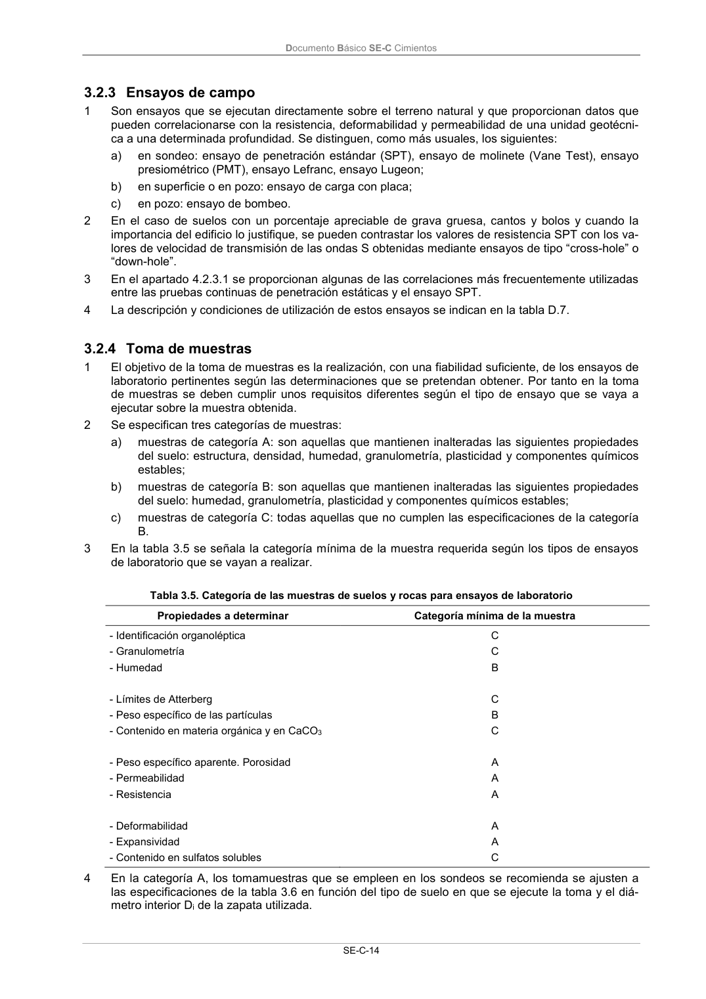

DB-SE-C · 3.2.3 Ensayos de campo · 3.2.4 Toma de muestras · versión 2019-12-20
SHA256: a71133f4b0dca253e45ea3071c70f2a512354bcc5cd841bf89b1a502f567ac5e · página física 19 de 165 · métodos de encabezado
solo si están cotejados.
Formatos: Markdown · JSON de bloques · PDF p. 19 · imagen PNG
Documento Básico SE-C Cimientos SE-C-14 3.2.3 Ensayos de campo 1 Son ensayos que se ejecutan directamente sobre el terreno natural y que proporcionan datos que pueden correlacionarse con la resistencia, deformabilidad y permeabilidad de una unidad geotécni- ca a una determinada profundidad. Se distinguen, como más usuales, los siguientes: a) en sondeo: ensayo de penetración estándar (SPT), ensayo de molinete (Vane Test), ensayo presiométrico (PMT), ensayo Lefranc, ensayo Lugeon; b) en superficie o en pozo: ensayo de carga con placa; c) en pozo: ensayo de bombeo. 2 En el caso de suelos con un porcentaje apreciable de grava gruesa, cantos y bolos y cuando la importancia del edificio lo justifique, se pueden contrastar los valores de resistencia SPT con los va- lores de velocidad de transmisión de las ondas S obtenidas mediante ensayos de tipo “cross-hole” o “down-hole”. 3 En el apartado 4.2.3.1 se proporcionan algunas de las correlaciones más frecuentemente utilizadas entre las pruebas continuas de penetración estáticas y el ensayo SPT. 4 La descripción y condiciones de utilización de estos ensayos se indican en la tabla D.7. 3.2.4 Toma de muestras 1 El objetivo de la toma de muestras es la realización, con una fiabilidad suficiente, de los ensayos de laboratorio pertinentes según las determinaciones que se pretendan obtener. Por tanto en la toma de muestras se deben cumplir unos requisitos diferentes según el tipo de ensayo que se vaya a ejecutar sobre la muestra obtenida. 2 Se especifican tres categorías de muestras: a) muestras de categoría A: son aquellas que mantienen inalteradas las siguientes propiedades del suelo: estructura, densidad, humedad, granulometría, plasticidad y componentes químicos estables; b) muestras de categoría B: son aquellas que mantienen inalteradas las siguientes propiedades del suelo: humedad, granulometría, plasticidad y componentes químicos estables; c) muestras de categoría C: todas aquellas que no cumplen las especificaciones de la categoría B. 3 En la tabla 3.5 se señala la categoría mínima de la muestra requerida según los tipos de ensayos de laboratorio que se vayan a realizar. Tabla 3.5. Categoría de las muestras de suelos y rocas para ensayos de laboratorio Propiedades a determinar Categoría mínima de la muestra - Identificación organoléptica - Granulometría - Humedad - Límites de Atterberg - Peso específico de las partículas - Contenido en materia orgánica y en CaCO3 - Peso específico aparente. Porosidad - Permeabilidad - Resistencia - Deformabilidad - Expansividad - Contenido en sulfatos solubles C C B C B C A A A A A C 4 En la categoría A, los tomamuestras que se empleen en los sondeos se recomienda se ajusten a las especificaciones de la tabla 3.6 en función del tipo de suelo en que se ejecute la toma y el diá- metro interior Di de la zapata utilizada.
